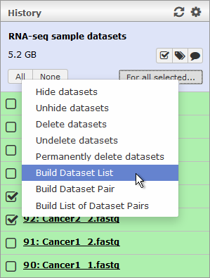
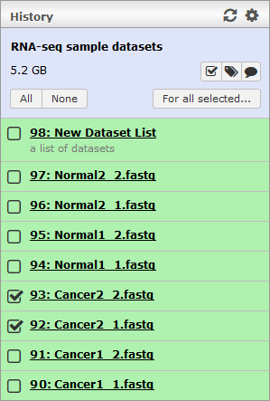

Dataset Collections
Dataset Collections allow you to group together related datasets into collections that can be processed in batch. Many of the NeLS workflows require input in the form of dataset collections.
Galaxy currently supports two different types of basic collections: pairs and lists. The pair collection type is used to represent the two ends of paired-end sequences, and hence such collections consist of exactly two datasets, one representing the forward sequence and the other representing the reverse. List type collections, on the other hand, can contain any number of datasets. It is also possible to nest these two basic collection types to create list of pairs collections which consist of any number of pairs.
To create a new collection, follow these steps:- If you have not already done so, you must first press the checkbox icon
 located above the datatsets in the History panel.
located above the datatsets in the History panel. - A few new buttons should now appear, along with checkboxes in front of every dataset in your history. Check off the datasets that you want to include in the collection.
- Press the "For all selected..." button to bring up a context menu and select either "Build Dataset List", "Build Dataset Pair" or "Build List of Dataset Pairs" depending on what type of collection you want to create.
- A dialog will now pop up to allow you to configure your collection. The appearance of this dialog will depend on the chosen collection type (see below). After you click the "Create list" button in this dialog, the new collection will be added to the top of your history.
|  |  |
Creating list collections
- All the datasets you selected from your history will appear beneath each other in the dialog. You can discard datasets from the list by pressing buttons on the right, but if you want to add more datasets to the collection you will have to start all over again. The order of the datasets in the list is usually important, so you can rearrange the list by clicking on a dataset and dragging it up or down. You can also select multiple datasets and drag them together. It is possible to rename a dataset in the list by clicking on the name.
- Before you can create the collection you must provide a name for it!
- Finally, press the "Create collection" button to create the new collection and add it to your history.
Creating pair collections
- The two datasets you selected from your history will appear beneath each other in the dialog. Galaxy will automatically nominate one of the datasets as "forward" and the other as "reverse". If the suggested assignment is incorrect, just click the "Swap" link above the two datasets to reverse it.
- Before you can create the collection you must provide a name for it!
- Finally, press the "Create collection" button to create the new pair collection and add it to your history.
Creating list of pairs collections
- Your unpaired datasets will appear in two lists: "unpaired forward" on the left and "unpaired reverse" on the right. Normally, both lists will contain all of the datasets, but you can also specify filters so that e.g. the list on the left will only display datasets whose names end in "_1" and the list on the right only displays datasets ending in "_2" (or containing some other specified text). If all your datasets appear in just one of the lists, click the "Clear filters" link in the middle to disable the current filtering. This should make all datasets appear in both lists. To pair up two datasets, simply click on one dataset from the list on the left (this will be the forward element) and one other dataset to pair it with from the list on the right (reverse element). If the lists are filtered and the two datasets you want to pair are already lined up next to each other in the two lists, you can also press the "Pair these datasets" button between them to pair them up. If you press the "Auto-pair" link, Galaxy will attempt to make pairs automatically based on the names of the datasets (in fact, Galaxy will always attempt to make the pairs automatically when you first bring up the dialog).
- The datasets that have been paired will appear in green with the forward dataset in the left column, the reverse to the right and the name of the pair in the middle. The name of the pair will be based on the similarity between the names of the two datasets, but you can click on the name to change it if you want. You can discard a pair and return the two datasets to the unpaired pile by clicking the "break link" icon to the right of the pair. Click the "Unpair all" link to return all paired datasets to the pile. You can also reorder pairs by selecting one or more pairs and dragging them up and down in the list.
- Before you can create the collection you must provide a name for it!
- Finally, press the "Create collection" button to create the new collection based on your chosen pairs and add it to your history.